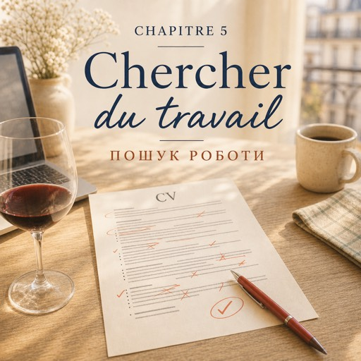

0:00
2:28
Натисніть речення, щоб почути його окремо.
Щоб слухати з підсвіткою — відкрийте сторінку в браузері.
Le jeudi 4 septembre — четвер, 4 вересня
Le matin, Natalia ouvre son ordinateur. Vingt onglets, vingt offres d'emploi.
Зранку Наталя відкриває ноутбук. Двадцять вкладок, двадцять вакансій.
Vendeuse. Serveuse. Caissière.
Продавчиня. Офіціантка. Касирка.
Un contrat à mi-temps, des horaires du soir.
Договір на пів ставки, вечірній графік.
Et toujours la même phrase : « Français courant exigé. »
І щоразу та сама фраза: «Вільна французька обов'язково».
Elle lit cette phrase quinze fois. Puis elle ferme trois onglets.
Вона перечитує цю фразу п'ятнадцять разів. Потім закриває три вкладки.
À midi, elle a un CV. Trois pages.
Опівдні в неї є резюме. На три сторінки.
Le soir, elle va au cours. Elle rentre à neuf heures moins le quart.
Увечері вона йде на курси. Повертається за чверть до дев'ятої.
Oksana est assise sur les marches du cinquième, avec une bouteille de vin.
Оксана сидить на сходах п'ятого поверху з пляшкою вина.
— J'ai lu ton message. Montre-moi ce CV.
— Я прочитала твоє повідомлення. Показуй резюме.
Elles s'installent dans la cuisine. Oksana lit et ne dit rien pendant deux minutes.
Вони сідають на кухні. Оксана читає і дві хвилини мовчить.
— Trois pages, Nata. Ici, personne ne lit trois pages.
— Три сторінки, Нато. Тут ніхто не читає трьох сторінок.
— Mais c'est mon expérience !
— Але ж це мій досвід!
— C'est ton expérience de Kyiv. Ici, ils veulent une page.
— Це твій київський досвід. Тут хочуть одну сторінку.
Oksana prend un stylo rouge. Elle coupe. Elle coupe encore.
Оксана бере червону ручку. Ріже. Ріже ще.
— Ça, non. Ça, non. Ça, oui.
— Це — ні. Це — ні. А це — так.
— Tu es organisée, tu es rapide, tu es sérieuse. Ça, tu le gardes.
— Ти організована, ти швидка, ти відповідальна. Оце лишаєш.
— Je ne parle pas bien français.
— Я погано говорю французькою.
— Alors tu n'écris pas ça.
— То й не пиши цього.
À onze heures, le CV fait une page.
Об одинадцятій резюме займає одну сторінку.
Après, c'est la lettre de motivation. Elles la réécrivent quatre fois.
Далі — мотиваційний лист. Вони переписують його чотири рази.
La première est trop longue. La deuxième est trop triste.
Перший — задовгий. Другий — засумний.
La troisième dit pardon quatre fois.
У третьому чотири рази сказано «вибачте».
— Tu demandes pardon d'exister. Arrête.
— Ти просиш пробачення за те, що існуєш. Припини.
La quatrième est bonne.
Четвертий — хороший.
Elles postulent à huit offres.
Вони подаються на вісім вакансій.
Deux boulangeries, un supermarché, une pharmacie, un pressing, deux cafés, une jardinerie.
Дві булочні, супермаркет, аптека, хімчистка, дві кав'ярні, садовий центр.
À minuit, Oksana met son manteau. Puis elle se retourne.
Опівночі Оксана вдягає пальто. Потім обертається.
— Attends. On répète. Je suis la patronne.
— Стривай. Репетируємо. Я — власниця.
— Oksana, il est minuit.
— Оксано, північ.
— Bonjour, madame. Vous cherchez un travail ?
— Добрий день, пані. Ви шукаєте роботу?
Natalia respire.
Наталя вдихає.
— ... Bonjour. Oui. Je cherche un travail.
— …Добрий день. Так. Я шукаю роботу.
— Vous avez de l'expérience ?
— У вас є досвід?
— J'ai travaillé quatre ans dans la logistique.
— Я чотири роки працювала в логістиці.
— Vous êtes disponible quand ?
— Коли ви можете почати?
— Je suis disponible tout de suite.
— Я можу почати одразу.
— Voilà. Trois phrases. Tu vois : tu sais.
— Отак. Три речення. Бачиш: ти вмієш.
Sur le palier, Oksana ajoute :
На сходовому майданчику Оксана додає:
— Envoie ton CV, on verra. Et à l'entretien, tu respires d'abord.
— Надішли резюме, побачимо. І на співбесіді спершу дихай.
Natalia dort à une heure du matin. Elle rêve en français, très mal.
Наталя засинає о першій ночі. Їй сниться сон французькою, дуже поганою.